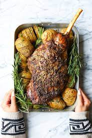

Lamb

Description
The marinade creates the most intense and flavorful lamb you will ever eat. This lamb is moist and has a 'softer' flavor compared to your typical rosemary-and-garlic lamb. The marinade sounds a bit different and odd, but take a chance on it. You'll experience a succulent, tender lamb in a way you never thought possible.
Ingredients
- ½ cup orange juice
- 1 cup white wine
- ¼ cup olive oil
- 3 cloves garlic, minced
- 2 tablespoons chopped fresh thyme
- 2 tablespoons chopped fresh rosemary
- ground black pepper to taste
- 1 (6 pound) bone-in leg of lamb, trimmed
- salt and black pepper
Steps
- Place orange juice, white wine, olive oil, garlic, fresh thyme and rosemary, and pepper into a blender; mix. Pour into a large, resealable plastic bag, and add the lamb. Coat meat with the marinade, squeeze out excess air, and seal the bag. Marinate in the refrigerator for 8 hours or overnight.
- Remove the lamb from the refrigerator at least 30 minutes before roasting. Pat dry with a paper towel. Generously salt and pepper both sides of the meat.
- Preheat an oven to 425 degrees F (220 degrees C). Arrange two racks in the oven - a middle rack to hold the lamb, and a lower rack to hold a roasting pan to catch the drippings. Place the empty roasting pan in the oven while the oven is preheating.
- Arrange meat directly on middle rack, fattiest side up so while the lamb cooks the fat will melt into the meat. Position roasting pan underneath meat to catch the drippings. Roast for 30 minutes, and then reduce heat to 300 degrees F (150 degrees C). Roast until an instant-read thermometer inserted into the center reads between 130 to 135 degrees F (54 to 57 degrees C), about 10 to 12 minutes per pound. Remove from oven, cover loosely with foil, and allow to rest for 10 to 15 minutes.